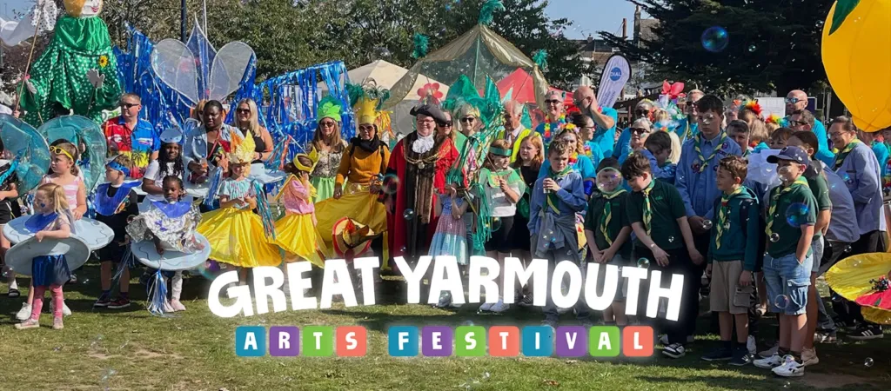

Independent consultancy
Systems and operational improvement for startups.
I'm Harley Bradford, an independent business analyst. I help startups see how their work actually operates, find what's slowing it down, and turn that analysis into practical improvements - the processes, services and digital tools everything else depends on.
Most startups don't have one big problem. They have several small ones that add up.
These are the situations I'm asked to help with most often, especially at the point where the way you've always done things stops working.
- Processes have become inefficient
- Over time, and nobody remembers why things work the way they do.
- Systems don't work together
- So people copy information between them by hand and errors follow.
- Teams work around broken processes
- Quietly, successfully, and invisibly until they can't.
- Services are hard to understand
- For the people using them, and sometimes for the people running them.
- Digital tools miss the real problem
- Usually because the problem was never properly defined in the first place.
- Growth has outrun the systems
- The organisation got bigger; its processes stayed the same size.
- Founder-led processes are breaking
- What worked when it was just you doesn't scale past the first hires.
- Operations aren't ready to scale
- Processes and systems need to be ready for growth, and sometimes for investment.
If two or three of these describe your organisation, that's usually a good sign that some structured analysis would help.
How I help
Understand → Improve → Build
Most of my work falls somewhere along this line. It usually starts with understanding, because improving or building on top of a wrong assumption is the most expensive mistake an organisation can make.
Understand
See how things actually work
Not how the org chart says they work - how they really work.
- Business analysis
- Process mapping
- Systems analysis
- Stakeholder analysis
Improve
Make it work better
Practical changes to processes, services and experiences - grounded in evidence, not opinion.
- Process improvement
- Service design
- UX
- Operational improvement
Build
Build what's missing
Turning clear thinking into real systems, workflows and digital experiences.
- Digital systems
- Websites
- Workflows
- Implementation & digital development
Business analysis comes first. Everything else on this page exists to support it, that's what keeps the work grounded, and it's what "independent" actually means here.
How I work
Not a rigid methodology. Just how I think.
Every engagement is different, but the shape of the thinking stays the same.
-
Understand
Understand the organisation, the problem, the people and the existing systems - before proposing anything.
-
Analyse
Map processes, trace dependencies, and identify the bottlenecks, inefficiencies and opportunities hiding in plain sight.
-
Design
Develop practical improvements and clearer ways of working - ones people can actually adopt, not just admire.
-
Build
Turn recommendations into real systems, workflows or digital experiences, implemented and documented.
-
Improve
Review what changed, check it did what it was meant to do, and identify the next opportunity.
Selected work
Evidence, not promises.
A selection of projects. Each case study sets out the challenge, my role and the approach, honestly, including what isn't yet measured.
subtyped.me
Turning a complex venture into a clearer operating model
Interim CEO & Head of Marketing: clarifying the offer, simplifying the site, rationalising products and establishing practical tools and responsibilities.
Read the case studyLiberu Software
Digital & service analysis
A website and service-positioning review of a managed-software and hosting business, clearer information architecture, product positioning and UX direction.
Read the case study
Great Yarmouth Arts Festival
Marketing research & digital strategy
Audience and platform research turned into a practical digital and community-engagement strategy, a research project, not a measured campaign.
Read the case studyProof
Recommended by people I've worked alongside
Recommendations from founders, former colleagues and community leaders I've worked with directly.
What the work is built on
-
Direct, end-to-end delivery
From first conversation through analysis to delivered output, not fragments of a larger programme handed off to someone else.
-
Analysis before anything is built
Understanding how the system actually works first, so improvement and build decisions are grounded in evidence rather than assumption.
-
Hands-on operational leadership
Including stepping into interim leadership during a difficult period for an organisation, not only advising from a distance.
-
Harley acted as the Marketing Lead and stepped into the Interim CEO position during a difficult period for our organisation. He consistently brought proactive ideas, practical solutions, excellent communication, and an unwavering commitment to our success. He is logic-oriented, business savvy, detail-focused, and would be an exceptional asset to any organisation.
Reese Patterson Founder · subtyped.me · LinkedIn -
I've known Harley for a very long time, one of the most thorough professionals and intelligent people I have ever met, cannot recommend him enough. His ability to understand business, provide suggestions and to think out of the box is impeccable. I love(d) working with Harley and am sure that he has a great career in front of him.
Arush Dubey Co-Founder & CEO, Alethman · LinkedIn -
Harley is a hardworking individual with a unique approach to delivering results. During his internship he achieved an impressive amount in a short period while consistently producing high-quality work. I would confidently recommend Harley to any organisation.
Curtis Delicata Founder · Liberu Group · LinkedIn
About
You work directly with the person doing the analysis.
I'm Harley Bradford. Bradford Independent is my independent consultancy, which means when you work with me, you get me: my analysis, my questions, my recommendations, and my accountability.
I'm based in Great Yarmouth, Norfolk. My background spans business, technology, digital development, marketing and organisational development, and before consulting, I worked around the local music industry with choirs, bands and productions, as an Ambassador for Music and a representative for schools and organisations.
What connects all of it is a simple interest: understanding how things actually work, and finding practical ways to make them work better.
Next step
Have a problem you're trying to untangle?
You don't need to have the solution figured out first. Tell me what's happening, what you're trying to achieve, and where you're getting stuck, I'll help you work out whether analysis, improvement or build is what you actually need.
Or go straight to the source
- harley@bradfordindependent.com
- I'll get back to you within a day.
- Great Yarmouth, Norfolk.